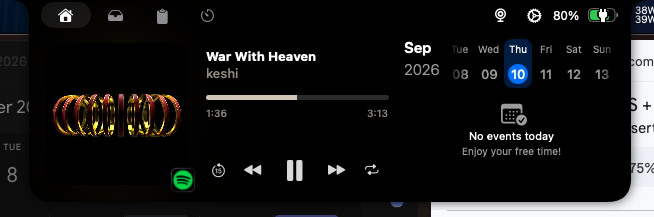

Each case study follows the same shape: the problem, who it's for, the insight that made the
solution different, and what came out of it.
Framelight
Real-time composition guidance for people who take photos on their phone, not with a camera.
The problem
Phone cameras solved exposure, focus, and stabilization years ago. They did nothing for
composition, which is still entirely on the person holding the phone. Apps that address it
mostly do so after the fact, in an editor, when the moment is already gone.
Insight
Feedback is only useful if it arrives before the shutter. A small model that ranks
candidate crops of the same scene against each other is small enough to run on-device, live,
at interactive speed. No photo ever leaves the phone to get scored.
A research assistant that remembers what you asked it last week and uses it without being told to.
The problem
Most research agents answer one question well and forget it the moment you close the
terminal. The interesting failure is question five: does it know you already asked about
vector databases when you now ask how two of them differ?
Insight
Memory is only valuable if irrelevant past entries stay out of answers and relevant ones
are found reliably. So the evaluation that matters is whether it finds the one relevant
prior entry among ten plausible distractors.
Shipping real fixes into a macOS utility with thousands of existing users, on someone else's codebase.

The live audio visualizer, driven by the track that's actually playing.
The problem
An always-visible utility has an unforgiving bar: any flicker, wrong elapsed time, or
dropped state is visible every time you glance at the top of the screen.
Insight
Bugs in an always-on app are found by using it, not by reading the code. I ran it as a
daily driver, traced each visible glitch to the state transition causing it, and fixed the
transition rather than the symptom.